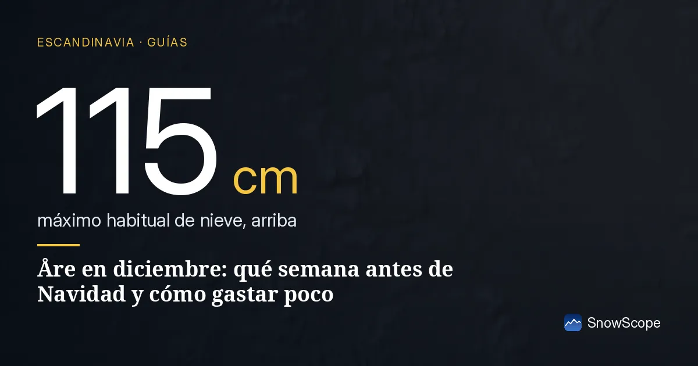

Åre en diciembre: qué semana antes de Navidad y cómo gastar poco
Åre se sitúa alto sobre el lago Åresjön con 116 km de pistas y 928 m de desnivel. El histórico de nieve de 46 inviernos muestra un patrón claro para diciembre: la segunda mitad del mes acumula cobertura fiable, mientras que la primera semana es una apuesta al azar. A media montaña (853 m) hay buena nieve solo en el 61 % de los primeros diciembres, pero en el 89 % de los casos a mediados de mes.
Consulta la previsión de nieve en tiempo real de Åre en la app SnowScopeEspesor de nieve, alertas de nieve polvo y mapa 3D, gratis.
Cuándo ir: los números
La nieve de diciembre en Åre aumenta constantemente a lo largo del mes. A media montaña, el porcentaje de inviernos con 30 cm o más sube del 61 % en el 1-7 de diciembre, al 76 % en el 8-14 de diciembre, luego al 89 % en el 15-21 de diciembre y alcanza el máximo del 93 % en la semana de Navidad.
El punto dulce para un viaje ajustado de presupuesto es el 15-21 de diciembre. Consigues probabilidades de nieve cercanas a Navidad sin la prima de vacaciones en forfaits y alojamiento. Un 15 de diciembre típico tiene 40 cm a media montaña, suficiente para esquiar la mayoría de pistas con seguridad.


Coste: forfaits y calendarios
Åre utiliza precios dinámicos para los forfaits, fijados por fecha a través de la tienda online oficial. Eso significa que las semanas tranquilas cuestan menos que las semanas de vacaciones. La primera semana de diciembre y los días entre Navidad y Año Nuevo son los más caros; la semana del 15-21 de diciembre está en una zona más tranquila.
Reserva tu alojamiento y forfait juntos alrededor de la semana elegida, no al revés. La reserva online anticipada de ambos te da más control sobre lo que gastas.
Altura: menos variación de lo que podrías esperar
El terreno de Åre se extiende desde 389 m hasta 1318 m, pero la nieve de diciembre no cambia tanto a lo largo de ese rango como en estaciones alpinas. Un 15 de diciembre típico tiene 34 cm en la base, 40 cm a media montaña y 46 cm en la cima. La cima es más ventosa, así que la altitud extra no siempre significa nieve más profunda en el suelo.
Lo que ha cambiado con el tiempo es la fiabilidad en la cima. Su media de diciembre bajó de 69 cm en inviernos de los años 80 y 90 a 36 cm en inviernos recientes. Media montaña perdió probabilidades similares: el porcentaje de semanas de Navidad con 30 cm bajó del 100 % al 80 %. La base se ha mantenido más estable.
El último invierno y el cambio a largo plazo
La temporada 2025-26 entregó 40 cm a media montaña el 15 de diciembre y 33 cm el 24 de diciembre. Eso fue promedio para años recientes pero por debajo de la mediana de 46 inviernos de 49 cm en la cima la Nochebuena. La nieve fina de inicio de temporada es común ahora.
La nieve de diciembre en Åre ha tendido a ser más ligera en los últimos 15 inviernos que en los años 80 y 90. La semana de Navidad a media montaña ahora tiene 30 cm solo en el 80 % de los inviernos, bajando del 93 % históricamente. Planifica para una semana típica a mediados de mes, no para polvo profundo.
Alternativas: Vemdalsskalet y cuándo mirar a otro lado
Vemdalsskalet, más al sur en Härjedalen, es una opción más pequeña y tranquila. Su nieve de diciembre es más fina: 33 cm a media montaña el 15 de diciembre, y solo el 63 % de los inviernos alcanzan 30 cm en la semana del 15-21 de diciembre. Sus precios también son dinámicos sin tarifa fija publicada.
En diciembre, Åre ofrece nieve más fiable y mucho más terreno a precios similares. Si necesitas certeza para una semana fija de principios de diciembre, mira hacia el noroeste hacia montañas suecas o noruegas más altas. A partir de enero, Vemdalsskalet se convierte en mejor valor.
En la montaña: viento, luz y aludes
Los días de diciembre son cortos. Planifica tu esquí alrededor de la luz disponible y dirígete a pistas bajas y protegidas los días ventosos. La cima está expuesta; las ráfagas pueden erosionar nieve de las pistas más altas incluso cuando media montaña se ve sólida.
Antes de ir fuera de pistas, consulta el último pronóstico de aludes sueco de Lavinprognoser. La nieve de inicio de temporada puede asentarse mal sobre lo que hay debajo.
Consejos para esquiadores
- Reserva la semana del 15-21 de diciembre: el 89 % de los 46 inviernos registrados tuvieron 30 cm o más a media montaña esa semana, frente al 61 % en la primera semana.
- Compra forfaits online y fuera del periodo de vacaciones (1-7 de diciembre y 24-31 de diciembre). Los precios dinámicos recompensan las reservas anticipadas en fechas tranquilas.
- Espera nieve a media montaña alrededor de 40 cm en un día típico a mediados de diciembre. La base recibe menos, la cima un poco más, pero el viento puede borrar esa diferencia.
- En días ventosos quédate en terreno bajo y protegido. La cima está expuesta y la nieve suele erosionarse por el viento.
- Lee el boletín de aludes sueco antes de esquiar fuera de pistas, especialmente al principio de la temporada cuando nieve nueva se asienta sobre una base débil.
Sobre estas cifras
Los espesores de nieve de las estaciones son la nieve más profunda en las pistas altas en la fecha indicada; son estimaciones para una zona, no una medida en un punto. Las previsiones pueden cambiar. Consulta siempre el boletín oficial de aludes antes de salir fuera de pista.
Boletines oficiales de aludes: Lavinprognoser (Naturvårdsverket)
Citar este informe
Para investigación, docencia o prensa: cifras y gráficos reutilizables libremente bajo CC BY 4.0 con esta cita.
SnowScope (2026), Åre en diciembre: qué semana antes de Navidad y cómo gastar poco, https://snowscope.app/blog/es/2026/11/are-december-skiing-sweden-price-snow.html, consultado el 2026-11-14
SnowScope (Atlas Labs). (2026, November 14). Åre en diciembre: qué semana antes de Navidad y cómo gastar poco. SnowScope snow reports. https://snowscope.app/blog/es/2026/11/are-december-skiing-sweden-price-snow.html
BibTeX
@misc{snowscope2026aredecemberskiingswedenp,
author = {{SnowScope (Atlas Labs)}},
title = {Åre en diciembre: qué semana antes de Navidad y cómo gastar poco},
year = {2026},
month = nov,
howpublished = {\url{https://snowscope.app/blog/es/2026/11/are-december-skiing-sweden-price-snow.html}},
note = {Published 2026-11-14 12:34 UTC; accessed 2026-11-14}
}· CC BY 4.0 · Métodos, datos y herramientas →
Åre: nieve y temperatura según la altura, este invierno vs el pasado (herramientas) →
Sigue Åre
Gratis: un aviso cuando llega la nieve y la previsión cada mañana.